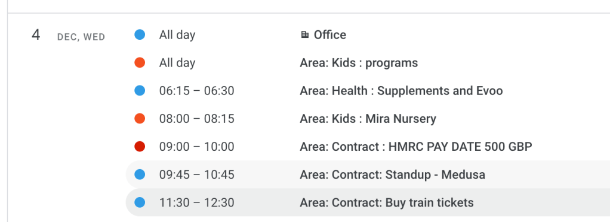
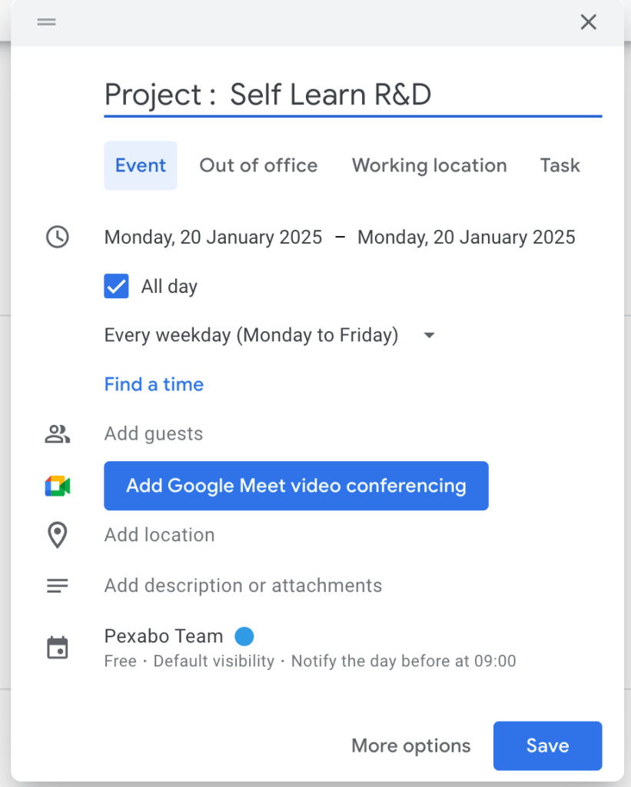
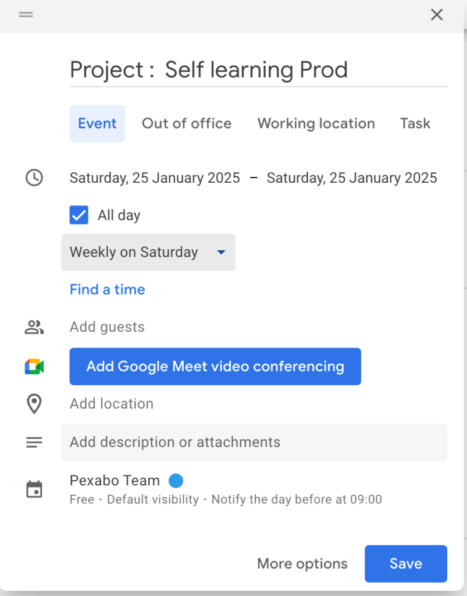
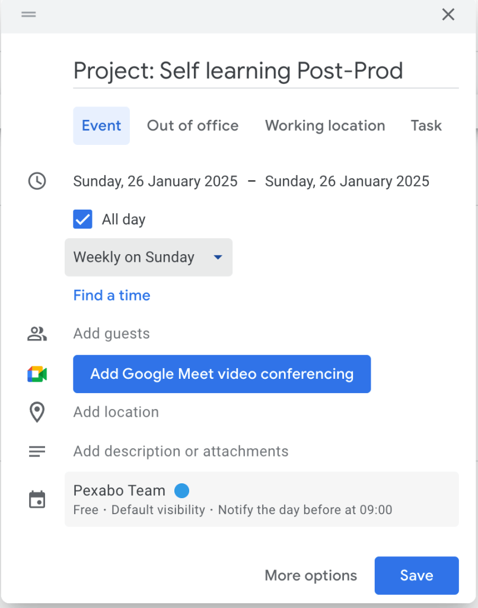
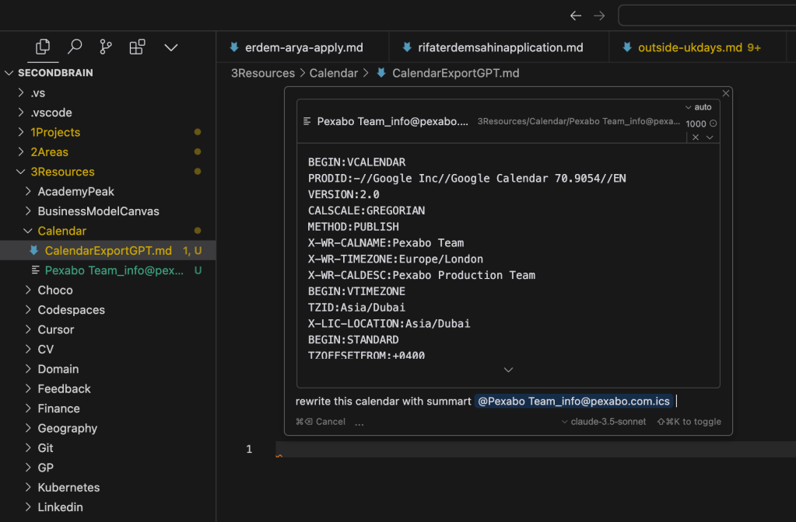
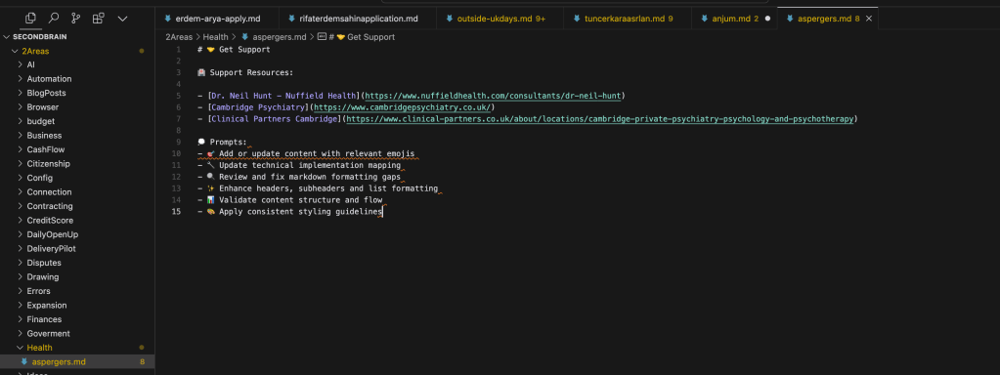

🌟 Maximizing Productivity: My 2025 Vision
Hey everyone! 🎉
Sometimes, life gets cluttered, and our calendars, tasks, and emails can feel overwhelming. I’ve been reflecting on how to clear the noise, focus on what truly matters, and find joy in the process. Here’s a snapshot of my plan to level up my workflow and prepare for a successful 2025 🚀.
🧹 Step 1: Clearing the Clutter
📅 Google Calendar:
- Pause ⏸️: Take a moment to breathe and assess.
Rat race and moonlights did not work
- Have the time to be able to create a product
Rent it out.
- Remove Unnecessary Events 🗑️: If I didn’t do it, it doesn’t need to take up space in my calendar or mind.
Cambly cant be used
-
Watching others medicine cant be done
-
Social events can be forced
Buddist Church even close by cant be added as it requires a coordination
- Label Items 🏷️: Mark events as Projects, Areas, or Resources to better organize priorities.

📧 Emails:
- Let It Go 🌬️: I’m focusing only on topics where I have control.
Expenses that can be mitigated > david lloyds >> parkside pool
-
Liabilities Car to Uber / Rent
-
Send Closure Emails ✅: Inform others about areas I’ve stepped back from, removing any lingering expectations.
✨ Step 2: Building a Future-Proof System
🎥 Video Production + 📊 Self-Learning Tools:
In 2025, I’ll be merging contracting time with video production and developing assessment tools based on my own self-learnings. Here’s why:
-
Efficiency 🕒: It ties multiple goals into one cohesive system.
-
Value 💡: Sharing knowledge through videos and tools helps others while reinforcing my own learning.
As a project daily execution matters



MASTER PLAN
- Work on the lacans triad during the week .
Solve the Loki > Event Router
- Record on saturday
Table reads
- Publich the self learning
in the weekend your experience
-
Publish and packages as Linkedin course with assignments and hashtags
-
Quarterly
Link to self learning on the website assesment tool and short report output for your added skill
🌈 Step 3: Adding Joy
🎮 Gamify Your Tasks: Transform Mundane Into Magic
Turn everyday tasks into mini-games that spark joy and motivation. Whether it’s tackling a to-do list or working through a project, adding a layer of fun can make the process engaging and rewarding. Think of creative ways to "level up" your productivity while keeping the product exciting and enjoyable.
- Git repo to tag it and find it
🥳 Celebrate Every Win: Progress Over Perfection
No matter how small, every step forward deserves recognition. Pause, reflect, and celebrate what you’ve achieved. Focus on comparing your progress to where you were yesterday—not five years ago or someone else's journey. It’s your story, so make it count.
- Be present
🎨 Embrace Creative Outlets: Let Projects Inspire Play
Inject creativity into your workflow by experimenting with unstructured, playful moments. Whether it’s through video production or building a Minimum Viable Product (MVP), let these activities become more than tasks—they can be outlets for innovation and self-expression.
- Send them on Linkedin
🗂️ Step 4: Archiving the Past
Some things belong to the past. For those:
- Last Check with AI
Export and look inside

- Archive It 📦: Keep what’s needed for reference but store it away from day-to-day views.
Remove the distractions games
-
Move On ➡️: Focus on what aligns with my current and future vision.
Let go on the emotions
Turkish private health
-
Focus on the nhs
-
Compare to your yesterday
dopamine detox
Move the Second Brain in Git

Final Thought 💭
This isn’t just about productivity. It’s about creating a sustainable, joyful way of working and living. If you’ve been feeling stuck or overwhelmed, I hope this inspires you to declutter, focus, and thrive.
Let me know your tips for staying on track or share your own vision for the future in the comments!
🔗 Connect with me:
Imported from rifaterdemsahin.com · 2024